Evidencias¶
A continuación, se exponen las evidencias de los procesos empleados para realizar la práctica.
- 1. Despliegue de la infraestructura
- 2. Publicación de las imagenes
- 3. Despliegue en la VM
- 4. Despliegue en el AKS
Despliegue de la infraestructura¶
En esta sección se muestran los logs los principales comandos ejecutados y algunas capturas que demuestran la correcta ejecución del caso práctico.
Lanzamos un terraform plan para comprobar todos los recursos.
terraform -chdir=./terraform plan
Terraform used the selected providers to generate the following execution plan.
Resource actions are indicated with the following symbols:
+ create
Terraform will perform the following actions:
# local_file.ansible_inventory will be created
+ resource "local_file" "ansible_inventory" {
+ content = (sensitive value)
+ content_base64sha256 = (known after apply)
+ content_base64sha512 = (known after apply)
+ content_md5 = (known after apply)
+ content_sha1 = (known after apply)
+ content_sha256 = (known after apply)
+ content_sha512 = (known after apply)
+ directory_permission = "0777"
+ file_permission = "0777"
+ filename = "../ansible/hosts.yml"
+ id = (known after apply)
}
# module.aks.azurerm_kubernetes_cluster.aks will be created
+ resource "azurerm_kubernetes_cluster" "aks" {
+ api_server_authorized_ip_ranges = (known after apply)
+ current_kubernetes_version = (known after apply)
+ dns_prefix = "akscndcp2"
+ fqdn = (known after apply)
+ http_application_routing_zone_name = (known after apply)
+ id = (known after apply)
+ image_cleaner_enabled = false
+ image_cleaner_interval_hours = 48
+ kube_admin_config = (sensitive value)
+ kube_admin_config_raw = (sensitive value)
+ kube_config = (sensitive value)
+ kube_config_raw = (sensitive value)
+ kubernetes_version = (known after apply)
+ location = "westeurope"
+ name = "aks-cnd-cp2-dev"
+ node_resource_group = (known after apply)
+ node_resource_group_id = (known after apply)
+ oidc_issuer_url = (known after apply)
+ portal_fqdn = (known after apply)
+ private_cluster_enabled = false
+ private_cluster_public_fqdn_enabled = false
+ private_dns_zone_id = (known after apply)
+ private_fqdn = (known after apply)
+ public_network_access_enabled = true
+ resource_group_name = "rg-cnd-cp2-dev"
+ role_based_access_control_enabled = true
+ run_command_enabled = true
+ sku_tier = "Standard"
+ support_plan = "KubernetesOfficial"
+ tags = {
+ "environment" = "casopractico2"
}
+ workload_identity_enabled = false
+ api_server_access_profile (known after apply)
+ auto_scaler_profile (known after apply)
+ default_node_pool {
+ kubelet_disk_type = (known after apply)
+ max_pods = (known after apply)
+ name = "default"
+ node_count = 1
+ node_labels = (known after apply)
+ orchestrator_version = (known after apply)
+ os_disk_size_gb = 30
+ os_disk_type = "Managed"
+ os_sku = (known after apply)
+ scale_down_mode = "Delete"
+ type = "VirtualMachineScaleSets"
+ ultra_ssd_enabled = false
+ vm_size = "Standard_B2ls_v2"
+ workload_runtime = (known after apply)
}
+ identity {
+ principal_id = (known after apply)
+ tenant_id = (known after apply)
+ type = "SystemAssigned"
}
+ kubelet_identity (known after apply)
+ network_profile (known after apply)
+ windows_profile (known after apply)
}
# module.aks.azurerm_role_assignment.acr_pull will be created
+ resource "azurerm_role_assignment" "acr_pull" {
+ id = (known after apply)
+ name = (known after apply)
+ principal_id = (known after apply)
+ principal_type = (known after apply)
+ role_definition_id = (known after apply)
+ role_definition_name = "AcrPull"
+ scope = (known after apply)
+ skip_service_principal_aad_check = (known after apply)
}
# module.container_registry.azurerm_container_registry.acr will be created
+ resource "azurerm_container_registry" "acr" {
+ admin_enabled = true
+ admin_password = (sensitive value)
+ admin_username = (known after apply)
+ encryption = (known after apply)
+ export_policy_enabled = true
+ id = (known after apply)
+ location = "westeurope"
+ login_server = (known after apply)
+ name = "acrcndcp2dev"
+ network_rule_bypass_option = "AzureServices"
+ network_rule_set = (known after apply)
+ public_network_access_enabled = true
+ resource_group_name = "rg-cnd-cp2-dev"
+ retention_policy = (known after apply)
+ sku = "Basic"
+ tags = {
+ "environment" = "casopractico2"
}
+ trust_policy = (known after apply)
+ zone_redundancy_enabled = false
}
# module.virtual_machine.azurerm_linux_virtual_machine.vm will be created
+ resource "azurerm_linux_virtual_machine" "vm" {
+ admin_username = "darioreyesr25"
+ allow_extension_operations = true
+ bypass_platform_safety_checks_on_user_schedule_enabled = false
+ computer_name = (known after apply)
+ disable_password_authentication = true
+ disk_controller_type = (known after apply)
+ extensions_time_budget = "PT1H30M"
+ id = (known after apply)
+ location = "westeurope"
+ max_bid_price = -1
+ name = "vm-cnd-cp2-docs-dev"
+ network_interface_ids = (known after apply)
+ patch_assessment_mode = "ImageDefault"
+ patch_mode = "ImageDefault"
+ platform_fault_domain = -1
+ priority = "Regular"
+ private_ip_address = (known after apply)
+ private_ip_addresses = (known after apply)
+ provision_vm_agent = true
+ public_ip_address = (known after apply)
+ public_ip_addresses = (known after apply)
+ resource_group_name = "rg-cnd-cp2-dev"
+ size = "Standard_B1ls"
+ tags = {
+ "environment" = "casopractico2"
}
+ virtual_machine_id = (known after apply)
+ vm_agent_platform_updates_enabled = false
+ admin_ssh_key {
+ public_key = <<-EOT
\*\*\*
EOT
+ username = "darioreyesr25"
}
+ os_disk {
+ caching = "ReadWrite"
+ disk_size_gb = (known after apply)
+ name = (known after apply)
+ storage_account_type = "Standard_LRS"
+ write_accelerator_enabled = false
}
+ source_image_reference {
+ offer = "0001-com-ubuntu-server-jammy"
+ publisher = "Canonical"
+ sku = "22_04-lts-gen2"
+ version = "latest"
}
+ termination_notification (known after apply)
}
# module.virtual_machine.azurerm_network_interface.nic will be created
+ resource "azurerm_network_interface" "nic" {
+ accelerated_networking_enabled = (known after apply)
+ applied_dns_servers = (known after apply)
+ dns_servers = (known after apply)
+ enable_accelerated_networking = (known after apply)
+ enable_ip_forwarding = (known after apply)
+ id = (known after apply)
+ internal_domain_name_suffix = (known after apply)
+ ip_forwarding_enabled = (known after apply)
+ location = "westeurope"
+ mac_address = (known after apply)
+ name = "vm-cnd-cp2-docs-dev-nic"
+ private_ip_address = (known after apply)
+ private_ip_addresses = (known after apply)
+ resource_group_name = "rg-cnd-cp2-dev"
+ tags = {
+ "environment" = "casopractico2"
}
+ virtual_machine_id = (known after apply)
+ ip_configuration {
+ gateway_load_balancer_frontend_ip_configuration_id = (known after apply)
+ name = "internal"
+ primary = (known after apply)
+ private_ip_address = (known after apply)
+ private_ip_address_allocation = "Dynamic"
+ private_ip_address_version = "IPv4"
+ public_ip_address_id = "/subscriptions/fb24fc1f-67e2-4871-8be2-c10a36e74c93/resourceGroups/rg-cnd-cp2-dev/providers/Microsoft.Network/publicIPAddresses/vm-cnd-cp2-docs-dev-public-ip"
+ subnet_id = "/subscriptions/fb24fc1f-67e2-4871-8be2-c10a36e74c93/resourceGroups/rg-cnd-cp2-dev/providers/Microsoft.Network/virtualNetworks/vnet-cnd-cp2-dev/subnets/subnet-cnd-cp2-dev"
}
}
Plan: 6 to add, 0 to change, 0 to destroy.
Changes to Outputs:
+ acr_login_server = (known after apply)
+ acr_password = (sensitive value)
+ acr_username = (known after apply)
Creación de los grupos de recursos¶
Tras ejecutar el comando de terraform apply podremos ver en el apartado Resource groups los siguientes RGs.
terraform -chdir=./terraform apply --auto-approve
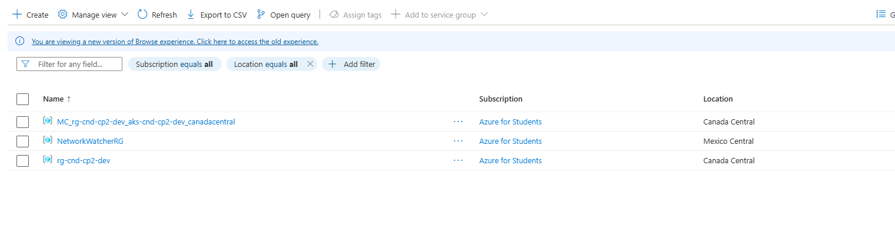
- MC_rg-cnd-cp2-dev_aks-cnd-cp2-dev_canadacentral: Grupo de recursos gestionado automáticamente por Azure para almacenar los nodos y configuraciones internas del AKS.
- NetworkWatcherRG: Grupo de recursos creado por Azure para herramientas de monitoreo y diagnóstico de red.
- rg-cnd-cp2-dev: Grupo de recursos principal donde se despliegan la VM, el ACR y el AKS mediante Terraform.
rg-cnd-cp2-dev¶
El rg-cnd-cp2-dev contiene todos los recursos declarados en nuestros ficheros de terraform.
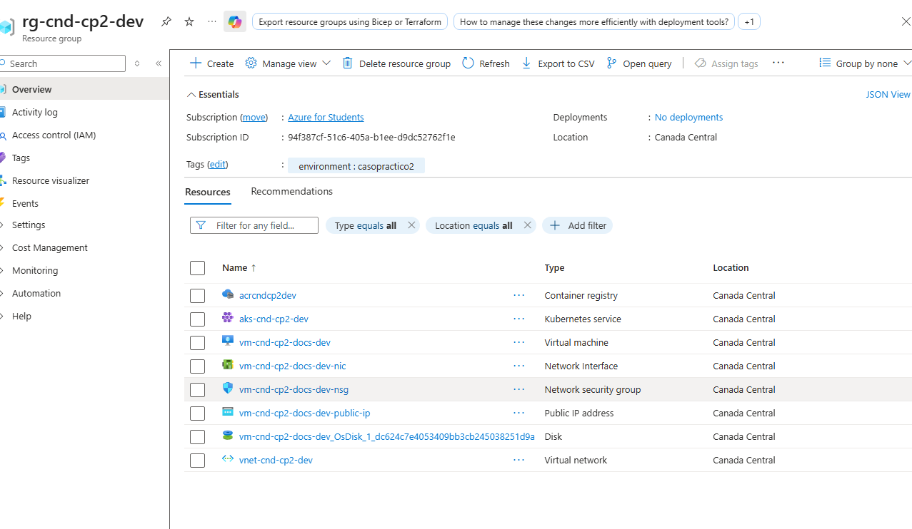
Creación del ACR¶
Desde el portal de Azure podemos observar como el servicio de contenedores (ACR) se ha creado correctamente bajo los parámetros definidos en los ficheros terraform.
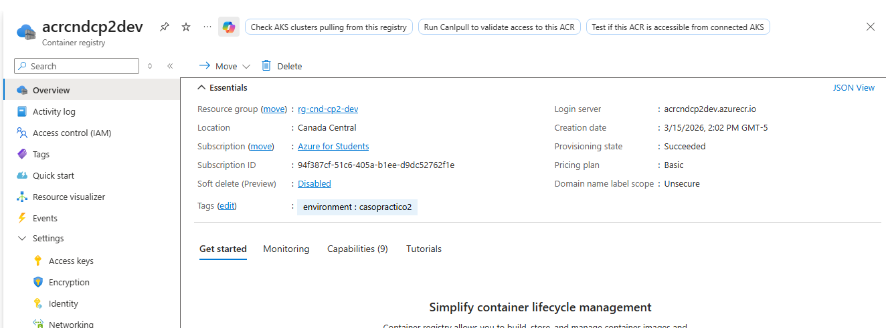
az acr list --query "[?name=='None']" --output table
Tras lanzar este comando recibimos esta salida por consola:
Here is the Markdown code for the table:
| Name | Location | LoginServer | CreationDate | ProvisioningState | AdminUserEnabled | DataEndpointEnabled | PublicNetworkAccess | NetworkRuleBypassOptions | ZoneRedundancy | AnonymousPullEnabled | MetadataSearch | ResourceGroup |
|---|---|---|---|---|---|---|---|---|---|---|---|---|
| acrcndcp2dev | westeurope | acrcndcp2dev.azurecr.io | 2026-03-15T21:00:00.000000+00:00 | Succeeded | True | False | Enabled | AzureServices | Disabled | False | Disabled | rg-cnd-cp2-dev |
El registro está accesible desde Internet y requiere autenticación (admin user). Las imágenes del proyecto se etiquetan con
casopractico2y se almacenan en este ACR.
También podemos comprobar que se ha creado correctamente iniciando sesión en el ACR mediante el comando az acr login --name None que devuelve la siguiente salida:
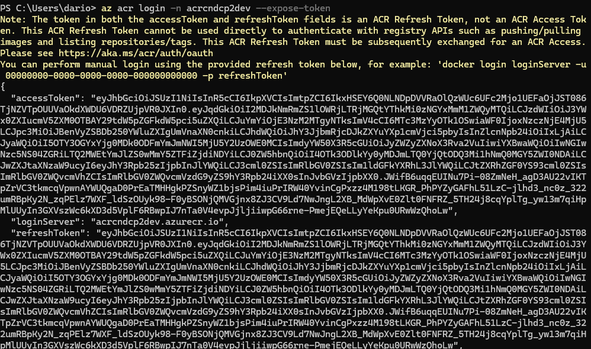
Creación de la VM¶
Desde el portal de Azure podemos observar como la VM se ha creado correctamente bajo los parámetros definidos en los ficheros terraform.
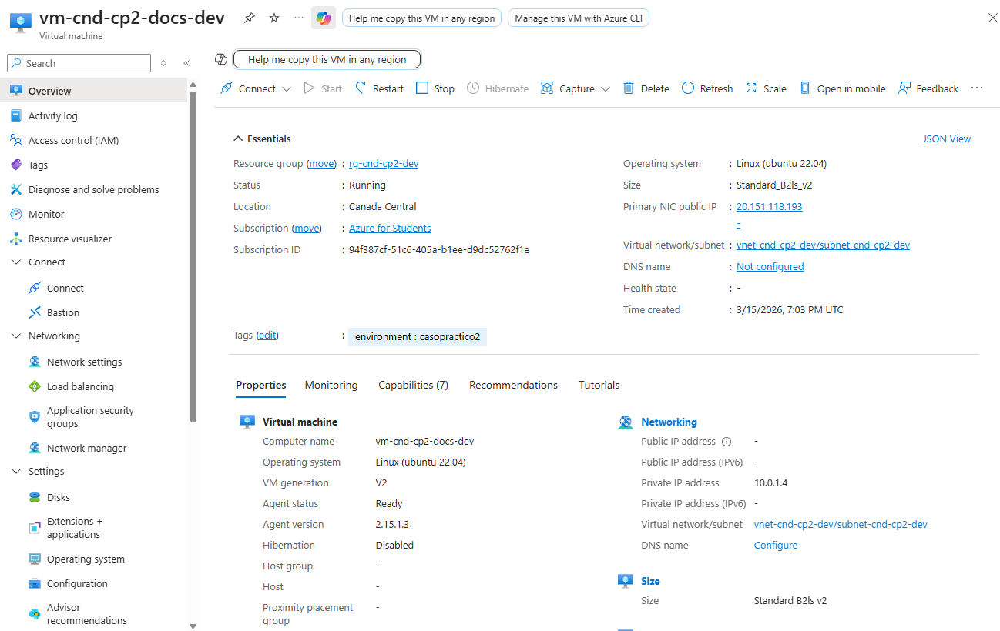
Para comprobar que la VM está levantada podemos acceder por ssh usando la clave pública que le pasamos en el momento del despliegue con terraform y la IP pública publicada en los outputs.
La IP Pública la podemos extraer de los outputs generados de terraform
terraform output
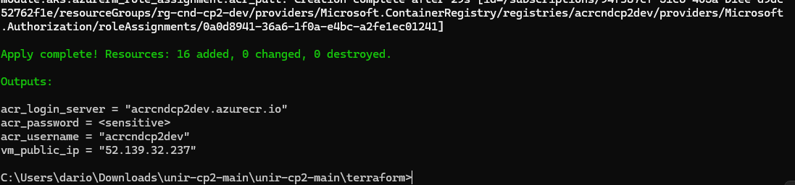
Si hacemos ssh contra esa IP y con la clave pública que pasamos en el momento de cración podremos acceder a la VM.
ssh -i ~/.ssh/az_unir_rsa darioreyesr25@20.151.118.193
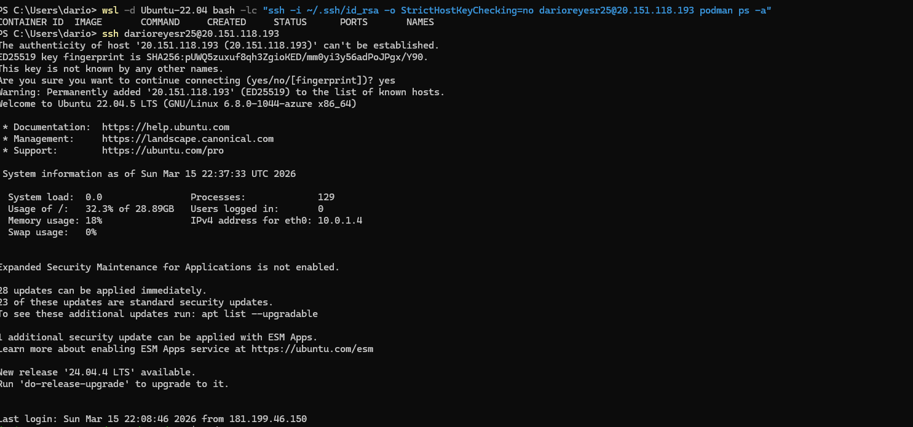
Creación del AKS¶
Desde el portal de Azure podemos observar como el servicio de Kubernetes (AKS) se ha creado correctamente bajo los parámetros definidos en los ficheros terraform.
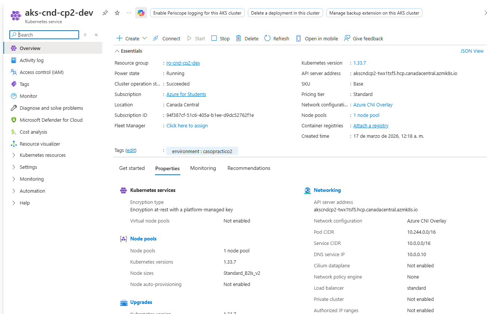
Podemos comprobar el estado del AKS en Azure mediante el siguiente comando:
az aks show --resource-group None --name None --output table
Here is the markdown code for your table:
| Name | Location | ResourceGroup | KubernetesVersion | CurrentKubernetesVersion | ProvisioningState | Fqdn |
|---|---|---|---|---|---|---|
| aks-cnd-cp2-dev | westeurope | rg-cnd-cp2-dev | 1.30 | 1.30.9 | Succeeded | akscndcp2-1fslhh1t.hcp.westeurope.azmk8s.io |
Para probar desde local que podemos acceder al cluster de Kubernetes, podemos realizar los siguientes comandos.
Credenciales de acceso
az aks get-credentials --resource-group None --name None
Con este comando podemos ver los nodos del cluster y si el AKS está levantado, deberían aparecer con estado Ready.
kubectl get nodes
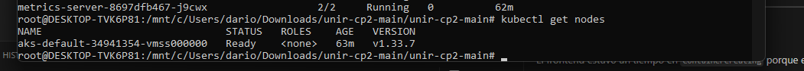
Con el siguiente comando podemos listar los pods internos del clúster (como CoreDNS, metric-server, etc.). Si están en Running, el clúster funciona correctamente.
kubectl get pods -n kube-system
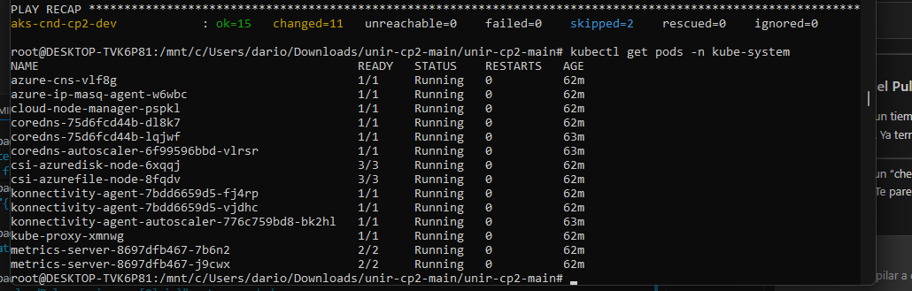
Publicación de las imagenes¶
Estructura de imágenes en el repositorio¶
Este repositorio contiene dos imágenes de contenedor usadas en el despliegue:
- docs-nginx (servicio web en la VM): definida en
Dockerfile.docsy construida con el contenido estático que vive en la carpetasite/. -
azure-vote-front (aplicación web en AKS): la imagen base se toma de Docker Hub (
jsosa15/azure-vote-front:v1) y se publica en el ACR desde el workflow de GitHub Actions (.github/workflows/publish-image-stackedit.yml). -
redis (servicio backend en AKS): la imagen base se toma de Docker Hub (
redis:7.0) y se publica en el ACR desde el propio playbook de Ansible (ansible/publish_images.yml).
Cada imagen se etiqueta con la versión casopractico2 y se almacena en el registry ACR desplegado (acrcndcp2dev.azurecr.io).
Detalle de construcción y publicación¶
- La imagen docs-nginx se construye en la VM mediante el Dockerfile
Dockerfile.docs. - El contenido web está en
site/. - El certificado X.509 y la configuración SSL/htpasswd se configuran dentro de la imagen.
# Dockerfile.docs (resumen)
FROM nginx:latest
RUN mkdir -p /etc/nginx/ssl
# Certificado autofirmado
RUN openssl req -x509 -nodes -days 365 -newkey rsa:2048 \
-keyout /etc/nginx/ssl/server.key \
-out /etc/nginx/ssl/server.crt \
-subj "/C=US/ST=State/L=City/O=Company/CN=localhost"
COPY nginx_ssl.conf /etc/nginx/conf.d/default.conf
COPY site/ /usr/share/nginx/html/
EXPOSE 443
CMD ["nginx", "-g", "daemon off;"]
- La imagen azure-vote-front se publica mediante GitHub Actions desde el workflow
./.github/workflows/publish-image-stackedit.yml. - Descarga la imagen base
jsosa15/azure-vote-front:v1y la taggea comocasopractico2. - Finalmente la push al ACR (
acrcndcp2dev.azurecr.io).
# Extracto relevante de .github/workflows/publish-image-stackedit.yml
- name: Pull Azure Vote Front Image from Docker Hub
run: |
podman pull docker.io/jsosa15/azure-vote-front:v1
podman tag docker.io/jsosa15/azure-vote-front:v1 ${{ env.ACR_NAME }}.azurecr.io/${{ env.IMAGE_NAME }}:${{ env.RELEASE_TAG }}
podman push ${{ env.ACR_NAME }}.azurecr.io/${{ env.IMAGE_NAME }}:${{ env.RELEASE_TAG }}
Publicación de imágenes mediante Ansible¶
Tras ejecutar el playbook publish_images.yml de Asnible con el comando:
ansible-playbook ansible/publish_images.yml -i an
sible/hosts.yml --extra-vars "@ansible/vars.yml" --ask-vault-pass
Podemos ver como se ejecuta el rol de ACR de la carpeta Ansible ejecutando las tareas sin errores.
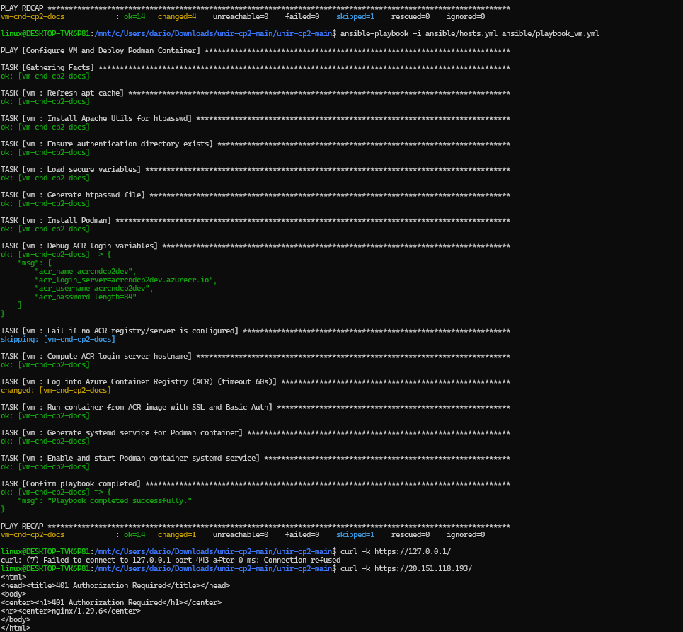
Publicación mediante Github Actions (fuera de alcance)¶
La publicación de la imagen se automatiza mediante el workflow Publish mkdocs image to ACR de GitHub Actions, que envía la imagen al Azure Container Registry (ACR). Para ello, se deben proporcionar las credenciales adecuadas y validar la ejecución del proceso.
- Ejecutar workflow y validar la correcta ejecución del job
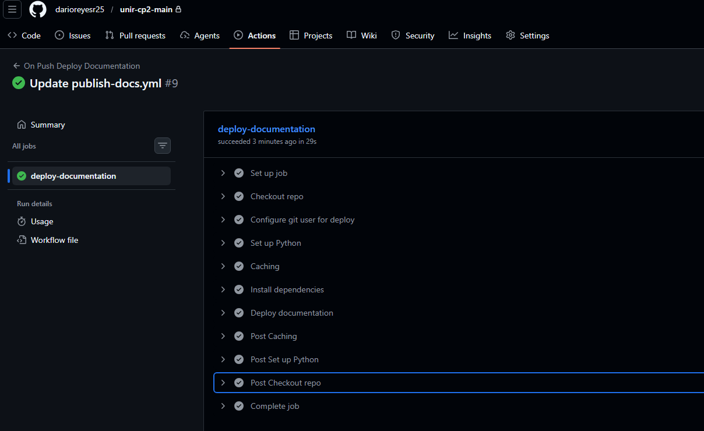
Validación de imagenes publicadas¶
Tras publicar las imágenes por Ansible o por Github Action podremos ver los repositorios en Services/Repositories en el recurso del ACR.
También podemos ejectuar el siguiente comando desde local para listar las imágenes del ACR.
az acr repository list --name None --output table
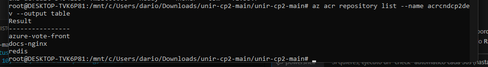
Imagen docs-nginx¶
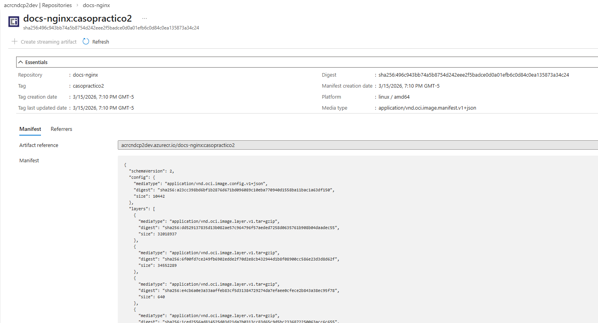
Imagen azure-vote-front¶
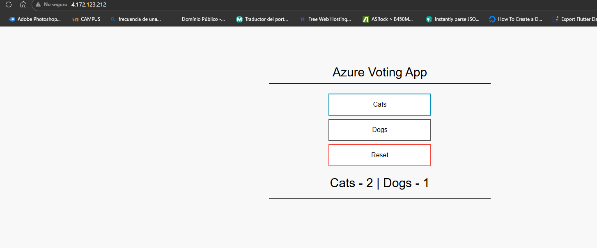
Despliegue en la VM¶
Para desplegar la imagen de mkdocs-nginx en un contendor sobre la máquina virtual ejecutamos el siguiente playbook que contiene el rol vm.
ansible-playbook ansible/playbook.yml -i ansible/hosts.yml --extra-vars "@ansible/vars.yml" --ask-vault-pass
Si todo ha ido bien se puede comprobar que el sitio se muestra a través de internet en la ip pública de la VM. Ejecutando el comando:
curl -k -u darioreyesr25:*** https://20.151.118.193:443
También puede visualizarse en el browser en la dirección https://ip-publica/.
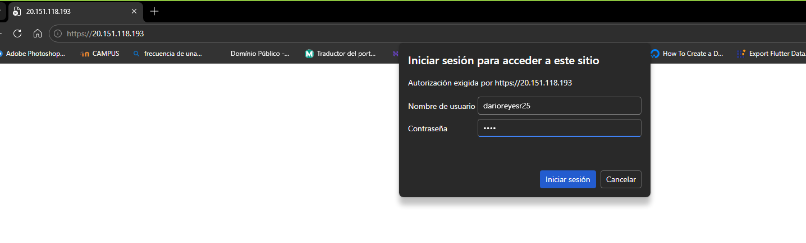
Si introducimos el usuario y la contraseña tendremos acceso a la web de la imagen de `` levantada en la IP pública de la VM.
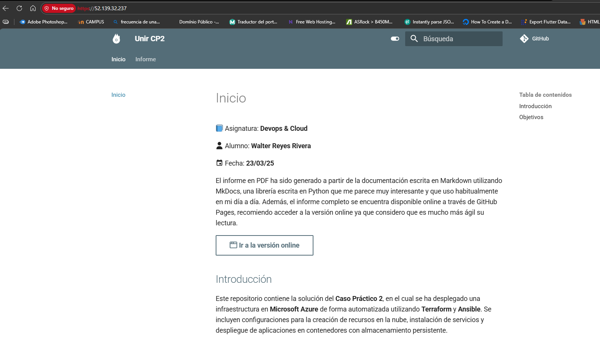
Despliegue en el AKS¶
A continuación se muestran las evidencias de que el despliegue del contenedor en AKS se ha realizado correctamente tras ejecutar el siguiente comando, el cual aplica el rol aks:
ansible-playbook playbook_aks.yml -i hosts.yml --ask-vault-pass
Podemos comprobar que el servicio se ha creado correctamente con tipo LoadBalancer y que la IP pública ha sido asignada:
kubectl get svc azure-vote-front -n cp2
Resultado:
NAME TYPE CLUSTER-IP EXTERNAL-IP PORT(S) AGE
azure-vote-front LoadBalancer 10.0.247.243 <pending> 80:30983/TCP 10s
¿Dónde ver la IP pública del LoadBalancer?¶
Este servicio está expuesto como un LoadBalancer, lo que hace que Azure cree automáticamente una IP pública para acceder a la aplicación.
-
Con kubectl (cuando se provisiona la IP):
Comprueba la columnakubectl get svc azure-vote-front -n cp2EXTERNAL-IP. -
En el portal de Azure: 1) Ve a tu clúster AKS → Services and ingresses. 2) Selecciona el servicio
azure-vote-front. 3) Verás la IP pública asignada.
⚠️ Puede tardar unos minutos en aparecer; mientras tanto el valor se mostrará como
<pending>.
¿Dónde ver los workloads desplegados?¶
Puedes verificar los workloads (deployments/pods) en el namespace cp2:
kubectl get deployments,pods -n cp2
O bien desde el portal de Azure en Workloads → Deployments (y Pods) dentro del clúster.
Esto indica que la aplicación desplegada está accesible públicamente cuando la IP pública se haya provisionado.
Podemos validar que el contenedor se ha desplegado correctamente y que está sirviendo en el puerto 80:
kubectl logs -n cp2 -l app=azure-vote-front
Resultado (ejemplo):
HTTP server started: http://localhost:80
Por tanto, accediendo desde el navegador a la IP pública que devuelva el servicio (kubectl get svc -n cp2 azure-vote-front) se podrá visualizar la aplicación.
Esto confirma que el despliegue en AKS se ha realizado con éxito, con el contenedor sirviendo desde la imagen publicada en el ACR.
Comprobación de persistencia¶
Para validar que el contenedor desplegado en AKS cuenta con almacenamiento persistente, se realiza la siguiente prueba:
- Crear una entrada desde la interfaz web de la aplicación accediendo a
http://<EXTERNAL-IP>.
Se añade un texto como el siguiente (esto se guarda en el volumen persistente del pod):
# Persistencia en AKS
_“Este contenido debe sobrevivir al reinicio del pod.”_
- Eliminar el pod para forzar su recreación automática por Kubernetes:
kubectl delete pod -n cp2 -l app=azure-vote-front
Desde Lens (o kubectl get pods -n cp2) se puede ver cómo se recrea el pod.
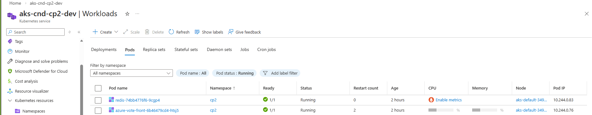
- Actualizar la página web tras unos segundos. La entrada debería seguir estando presente, lo que confirma que el volumen persistente está funcionando correctamente.